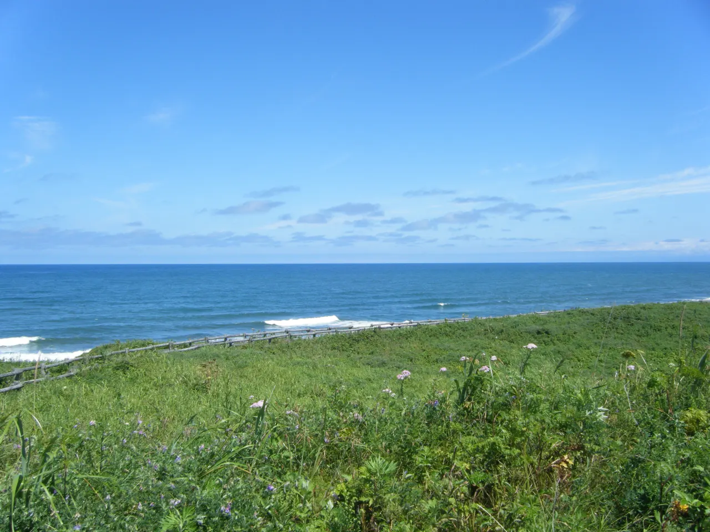
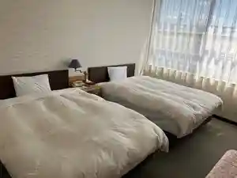
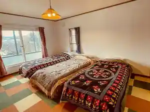
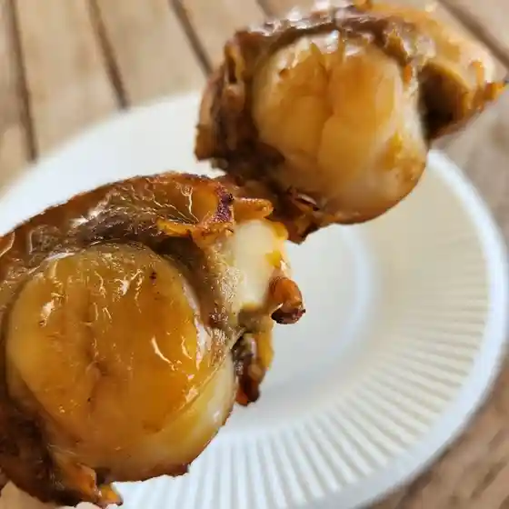
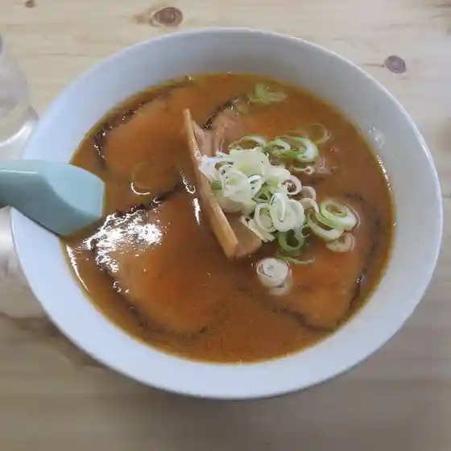
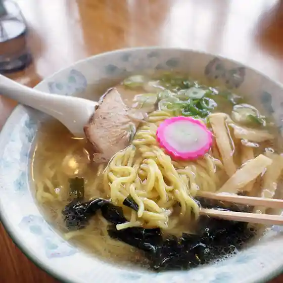
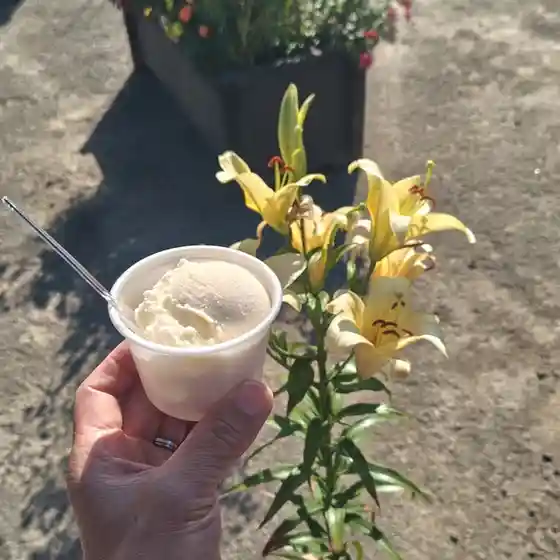
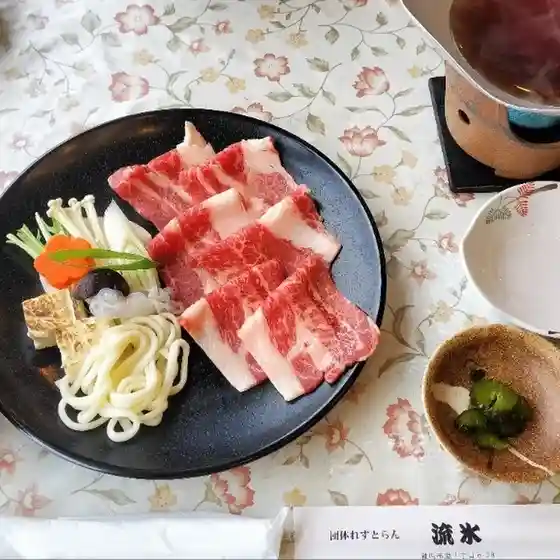
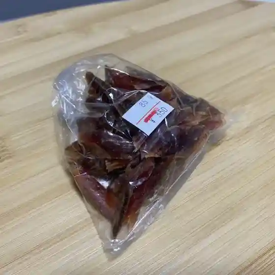

Koshimizu
Koshimizu · Hokkaido
Koshimizu
Highlighted on the Hokkaido map.

Stay
小清水温泉ふれあいセンター

Koshimizu Onsen Fureai Sentaa
はなことり

Hanakotori
Dining
小清水原生花園インフォメーションセンター Hana

Koshimizu Genseikaen Infomeeshonsentaa Hana
CAKE.ISZ
Cake . Isz
喜楽食堂

Kiraku Shokudou
ラーメンきっさ えきばしゃ

Raamen Kissa Ekibasha
青い屋根

Aoi Yane
食事処 ゆり LILY PARK

Shokuji Tokoro Yuri Lily Park
レストラン流氷

Resutoran Ryuuhyou
ニハチ食品

Nihachi Shokuhin
きなが
Kinaga
セイコーマート 小清水店
Seikoomaato Koshimizu Mise
セブンイレブン 小清水町店
Sebun'Irebun Koshimizu Machi Mise
きっちん マウニ
Kitchin Mauni
アロマ&ねこカフェ CORON
Aroma & Neko Kafe Coron
セイコーマート 小清水道の駅店
Seikoomaato Koshimizu Michi No Eki Mise
原生亭
Gensei Tei
小清水交通ターミナル
Koshimizu Koutsuu Taaminaru
カレー＆Cafe M's
Karee & Cafe M'S
ままべん
Mamaben
茶房 潤
Sabou Jun
駄菓子屋 まも
Dagashiya Mamo
moi moi cafe 小清水
Moi Moi Cafe Koshimizu
ゆりの丘
Yurino Oka
じゅんちゃんのお店
Junchannoo Mise
水無月
Minatsuki